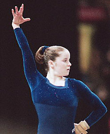

Elise Ray (USA)
2000 US All-Around Champion
2000 Olympics Team Bronze Medalist

Olympic Games: 1 Bronze
Elise was born on February 6, 1982, in Tallahassee, FL. When she was 5, her mother enrolled her in a recreational tumbling class. One year later, she took her first gymnastics class at Gymnastics Plus in Columbia, MD, then trained
at Docksiders in Millersville with coach Mark Weber before moving to Hill's Gymnastics in 1995. Training alongside then two-time Olympian Dominique Dawes at Hill's gave Elise Olympic aspirations of her own. She accomplished her
dream by winning both the 2000 US Championships and Olympic Trials, and was named captain of the women's gymnastics team at the Sydney Games, where the team placed fourth.
After Sydney, Elise took part in a post-Olympic tour in late 2000 and enrolled at the University of
Michigan in January 2001, where she received a full athletic scholarship. In April, she led her team to a third-place finish
and won the all-around title at the NCAA Championships. At her final NCAA Championships, in 2005, she won silver on beam.
In April 2009, the IOC stripped the Chinese team of the bronze medal they won in Sydney, after confirming that one of their gymnasts had been under the age limit. The medals were awarded to the USA team, which the women
received at a ceremony held during the 2012 US Championships.
Competition
Results
1992
USAIGC Nationals: 1st AA (Level 8)
1993
Level 9 Nationals: 3rd AA (age 9-11)
Region 7 Championships: 1st Team
Sunshine Invitational: 3rd FX, 10th B
1994
Jr. USAIGC
Nationals: 1st AA
1995
Jr. American Classic: 28th AA
1996
Jr. American Classic: 10th AA
Jr. Pan American Games: 2nd Team, 1st UB, 1st FX
Jr. US Championships: 3rd AA
Jr. US Classic: 5th AA
1997
Intl. Junior Championships: 17th AA, 2nd FX
Jr. American Classic: 3rd AA
Jr. Intl. Team Championships: 1st Team, 6th AA
Jr. US Championships: 4th AA
Jr. US Classic: 13th AA
1998
American Classic: 5th AA
China Cup: 8th AA
US Championships: 5th AA
1999
CAN-USA Dual Meet: 2nd Team, 2nd AA
Intl. Team Championships: 2nd Team, 15th AA
US Championships: 6th AA, 1st FX, 5th B, 6th V
US Classic: 28th AA
US World Team Trials: 1st AA
World Championships: 6th Team, 8th AA, 7th UB
2000
Aussie Haircare Invitational: 1st AA, 1st V, 1st UB, 1st FX
Olympic Games: 3rd Team, 13th AA, 8th B
US Championships: 1st AA
US Olympic Trials: 1st AA
2001
Big Ten Championships: 1st Team
NCAA Championships: 3rd Team, 1st AA, 3rd UB, 8th FX
2002
Big Ten Championships: 1st Team
NCAA Championships: 4th AA, 1st B, 4th V
Shanico Invitational: 1st Team, 1st AA, 1st UB, 1st B, 2nd V
UCLA Invitational: 2nd Team, 1st V
2004
Big Ten Championships: 1st Team, 1st AA, 1st UB, 1st B
NCAA Championships: 4th AA, 1st UB, 3rd B
2005
NCAA Championships: 5th Team, 12th AA, 2nd B
This page was created on September 15, 2020.
© Gymn Forum